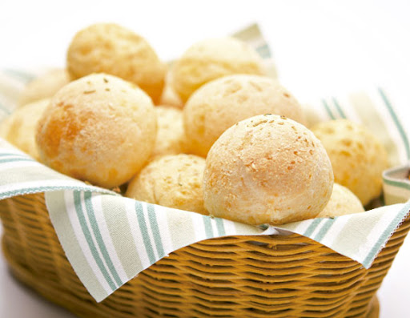

Delícias de Minas
Pão de Queijo

Pão de Queijo
Ingredientes
- 1 ovo inteiro
- 1 colher (café) de sal
- 1 xícara (chá) de leite
- 1 xícara (chá) de queijo minas meia cura ralado
- 1 xícara (chá) de polvilho azedo
Porções
Serve 15 pessoas
Tempo de Preparo
50 Minutos
Passo a Passo
- Em uma vasilha, misture todos os ingredientes, menos o leite
- Em seguida, vá adicionando o leite aos poucos, até que a massa fique homogênea
- Modele os pães e coloque-os em forma untada com óleo
- Levar ao forno pré aquecido por 40 minutos ou até dourar